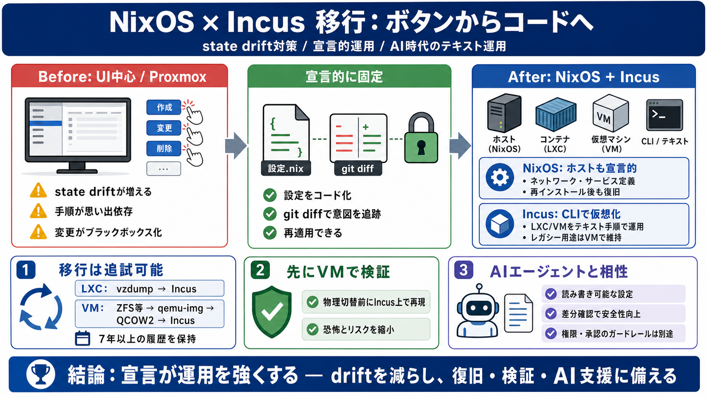

Migrated my Proxmox cluster to NixOS + Incus - Reddit
I've been using AI agents heavily for coding, and having everything declarative means they can actually read and modify …

I've been using AI agents heavily for coding, and having everything declarative means they can actually read and modify …
I have started defining my desktop and main driver in NixOS and I like it. Currently I have a ProxMox server with a few …
# I've gone full Nix: Proxmox to NixOS + Incus. I have officially decommissioned my Proxmox cluster. After years of runn…
# Using NixOS for Immutable Infrastructure and Declarative Configuration. Enter **NixOS**, a unique, powerful, and devel…
... Automation #SysAdmin #Infrastructure #Programming #Proxmox #Koromatech. ... We will cover topics such as infrastruct…